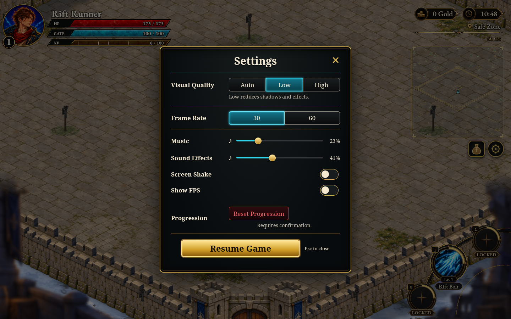
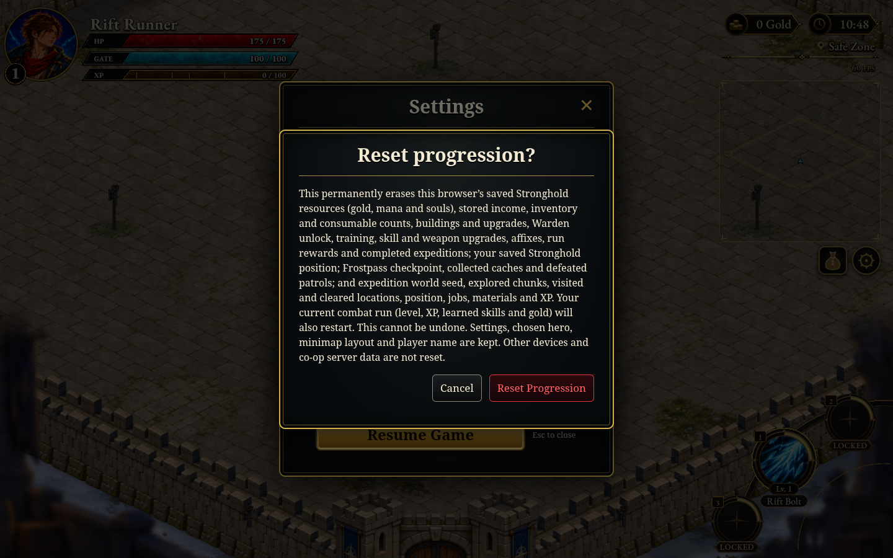
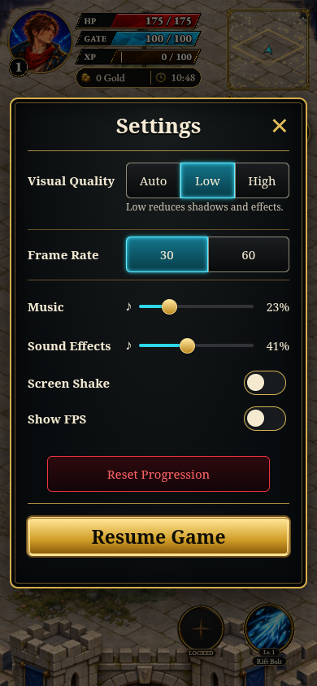
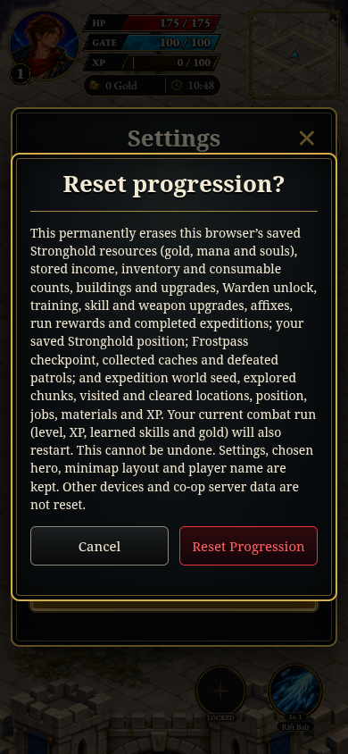
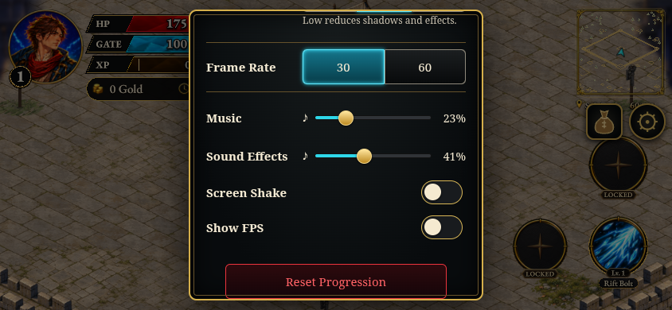
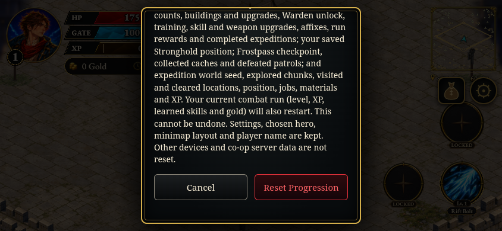

Verified on the live game at desktop 1440×900, mobile 390×844 and touch landscape 844×390, with the default renderer. Zero page or console errors.
Controls, real quality/frame-rate effects, independent audio, solo pause, keyboard/touch, reload persistence and safe reset paths passed. Only the explicit second confirmation erased the isolated progression. The fresh game loaded afterward; preferences and unrelated storage remained intact.
Slider values and saved progression were deliberately changed in isolated browser contexts. No human player data was used.
Full browser results · Release provenance · Open game





